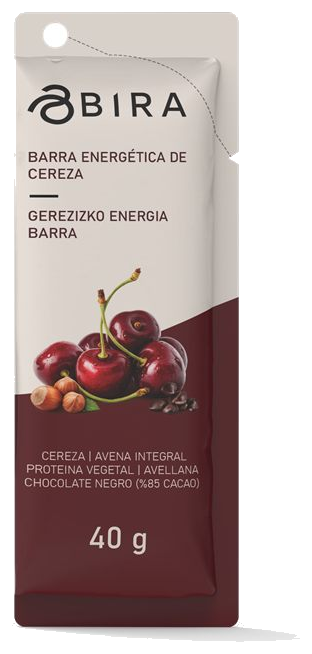
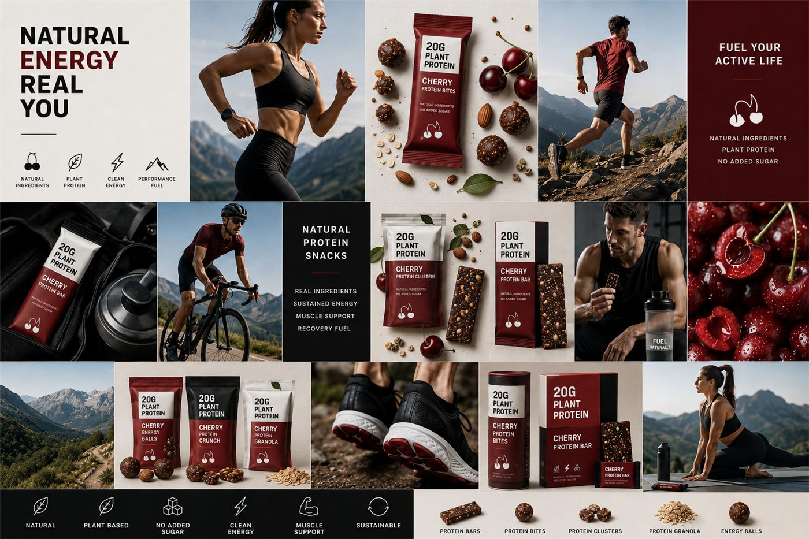
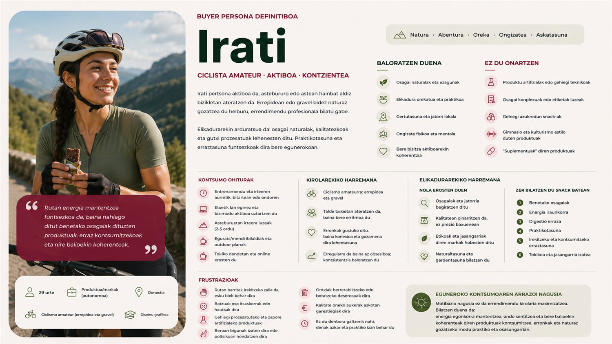
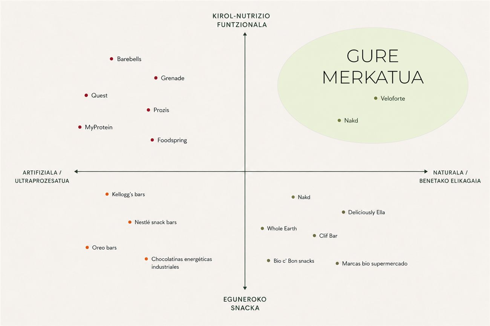
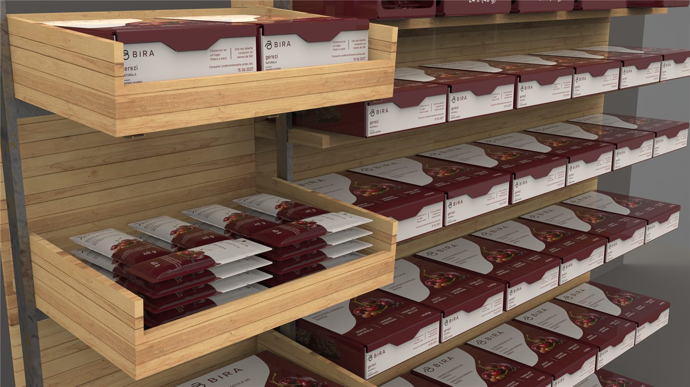
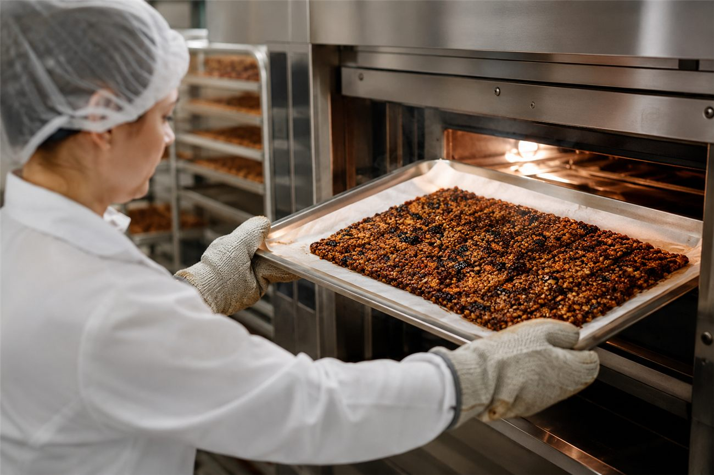
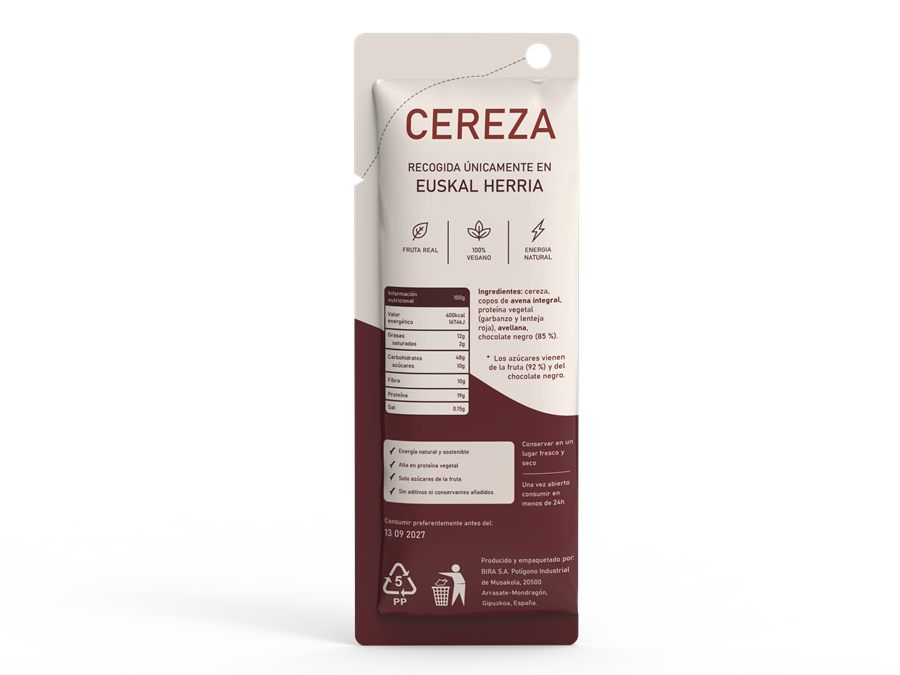
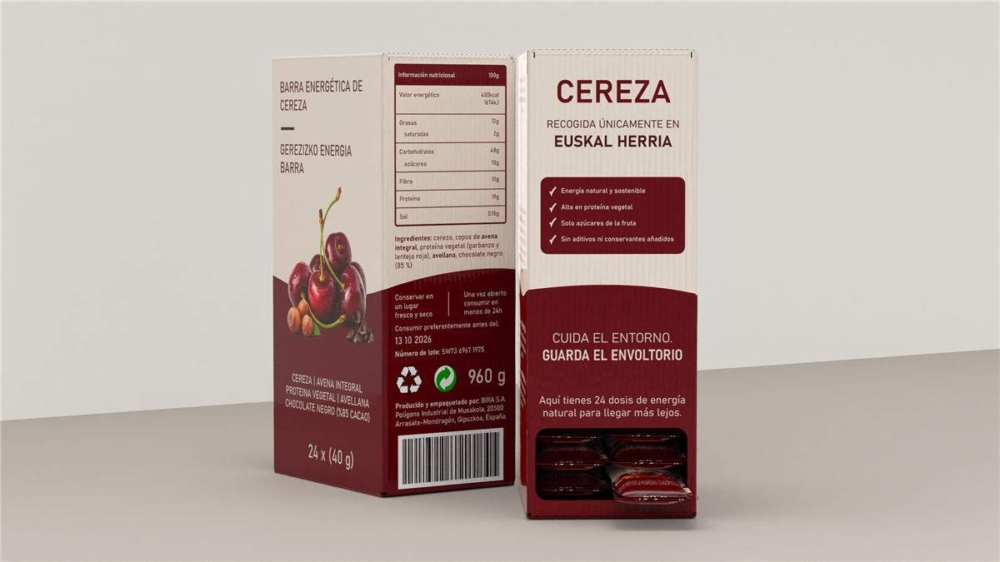

01
Bilaketa estrategikoa
Elikagai-xahutzearen testuingurua eta udako kontsumo-joerak. Frutaren aukeraketa: gerezia.
Udako euskal uztari irteera ematen dion energia-barra naturala. Gerezi birbalorizatua eta landare-proteina, gehigarri artifizialik gabe.

«Nola emango diogu irteera udako euskal uztari?»
Udan (ekainetik abuztura) Debagoieneko tokiko fruta eta barazkien ekoizpena gailurrera iristen da, baina eskaria jaitsi egiten da. Horrek gehiegizko ekoizpena, balio-galera eta elikagai-xahutzea sortzen ditu. Ereindajan Debagoieneko egitasmo agroekologikoak erronka hau planteatu zuen.

Diseinu-pentsamenduan oinarritutako metodologiarekin, arazotik soluziora.
Elikagai-xahutzearen testuingurua eta udako kontsumo-joerak. Frutaren aukeraketa: gerezia.
Merkatua, lehiakideak eta erabiltzaileak: inkesta (n=90), elkarrizketak eta pertsonak.
Produktu-kontzeptua, marka eta diseinua: BIRA eta «Real Food Endurance» kokapena.
Fabrikazioa, ontziratze funtzionala, etiketak eta lege-alderdiak. Merkaturatze-estrategia.
astean gutxienez 2 aldiz kirola egiten du
ordubete baino gehiagoko saioak egiten ditu
energiagatik kontsumitzen du, ez lehiagatik
inkestako parte-hartzaile
Iturria: PBL06 proiektuko inkesta propioa (n=90). «Naturala eta kontserbatzailerik gabea» izan zen baloratuena (3,95/5).

29 urte. Energia mantentzeko fruituetan oinarritutako produktu naturalak nahiago ditu, suplementu prozesatuak baino. Kirol-errendimendua eta osasuna uztartzen ditu, errazkeria funtzionalik gabe.

BIRA kirol-nutrizio prozesatuaren eta snack osasuntsuaren arteko hutsunean kokatzen da: errendimendu naturala, benetako elikadurarekin. Lehiakide gehienek prozesatua edo errendimendu hutsa eskaintzen dute; BIRAk biak batzen ditu.
Gerezi birbalorizatuan eta lekale-proteinan (garbantzua eta dilista gorria) oinarritua. 40 g energia egonkorra, digestio erraza eta benetako zaporea.
%85 kakao, geruza fina eta intentsoa amaiera dotorerako.
Hur txigortuak — zati kurruskari eta gantz onak.
Gerezi birbalorizatua, deshidratatua eta trituratua. Zapore erreala.
Olo integrala + landare-proteina (garbantzua eta dilista gorria).
Egitura bera, kode kromatiko bakarra. Beti energia errealarekin.
Eskuan eutsi eta mugimenduan jateko diseinatutako ontzi funtzionala, 6 eta 24 unitateko kutxekin eta salmenta-puntuko ikuspegiarekin.





Logoa «B» letraren eta gerezi baten batuketatik sortzen da: forma sinple, organiko eta zintzo bat.
Ez da helmuga. Bidea da.
Real energy belongs to the journey
Mondragon Unibertsitatea · Goi Eskola Politeknikoa
Diseinu Industrialeko Ingeniaritza eta Produktu Garapena
Udako euskal uztari irteera ematen dion energia-barra naturala — gerezi birbalorizatuan eta landare-proteinan oinarritutako snack funtzionala.
Lehenengoen artean egon kaleratzeez eta sasoiko aldaeraz jakiteko.
Inoiz ez dugu spamik bidaliko. Eman. Hartu. Jarraitu.